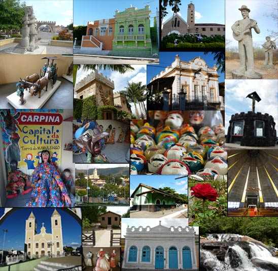

Confira as fotos do projeto
Álbum de Fotos

oi quero informar quer ao ver as fotos senti uma saudade danada da familia bem receber,sejam sempre bem vindos a Bezerros!!!!valeu
AMEI TODAS AS FOTOS,MAIS PODEMOS ACRESCENTAR MAIS UMA.TRACUNHAÉM É CLARO.COLOCA DE TRACUNHAÉM TB NÉ POW.
Gostei muito desse site , ta bem estruturado .
>> Início
>> Bem Receber
>> Monitores
>> Notícias
>> Concurso
>> Quadro de Avisos
>> Fotos
LINKS
- Empetur
- Ipernambuco
- Noronha
- PE conhece PE
- Bem Receber


antonia:
oi quero informar quer ao ver as fotos senti uma saudade danada da familia bem receber,sejam sempre bem vindos a Bezerros!!!!valeu
10 de agosto de 2009, 14:11REGILENE:
AMEI TODAS AS FOTOS,MAIS PODEMOS ACRESCENTAR MAIS UMA.TRACUNHAÉM É CLARO.COLOCA DE TRACUNHAÉM TB NÉ POW.
27 de março de 2009, 3:04Denize:
Gostei muito desse site , ta bem estruturado .
26 de março de 2009, 16:08